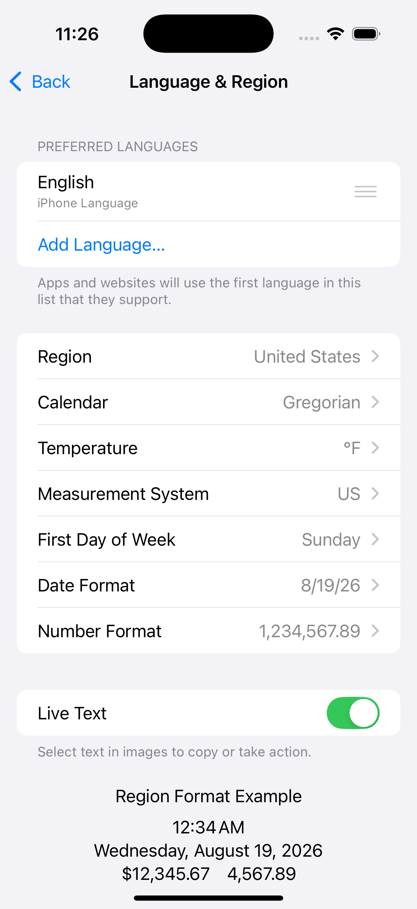

The Meshtastic app automatically displays temperatures, distances, speeds, and times in the units your device is configured to use — no settings to change inside the app.
Meshtastic radios always transmit data in metric units (meters, °C, km/h, hPa, etc.). When the app receives this data, it hands it to your device's built-in formatting system, which converts and displays values in whatever unit system you've chosen in Settings → General → Language & Region.

The Language & Region screen controls how the Meshtastic app displays temperatures, distances, dates, numbers, and more. Key settings:
| Setting | What It Controls in Meshtastic |
|---|---|
| Temperature | °C or °F for all sensor readings and weather |
| Measurement System | Metric (m, km, kg, mm) or US/UK (ft, mi, lbs, in) |
| Calendar | Calendar system for all dates |
| First Day of Week | Week start day in date displays |
| Date Format | Date ordering throughout the app |
| Number Format | Decimal separators and digit grouping |
Temperature values from environment sensors and weather forecasts are transmitted as °C and displayed as either °C or °F based on your device's temperature unit preference.
| Your Setting | You See |
|---|---|
| Celsius | 22 °C |
| Fahrenheit | 72 °F |
This affects all temperature displays throughout the app: node environment telemetry, soil temperature, dew point, weather forecasts, and telemetry chart axes.
Distances between nodes and GPS altitudes are transmitted as meters and automatically scaled and converted by the system.
| Your Setting | Small Distance | Large Distance | Altitude |
|---|---|---|---|
| Metric | 350 m | 2.5 km | 1,200 m |
| Imperial (US) | 1,148 ft | 1.6 mi | 3,937 ft |
The app uses natural scaling — short distances stay in meters or feet, while longer distances switch to kilometres or miles automatically.
GPS ground speed is displayed in your locale's preferred speed unit.
| Your Setting | You See |
|---|---|
| Metric | 12 km/h |
| Imperial (US) | 7 mph |
Speed appears on the GPS Status screen when your device has an active GPS fix.
Wind speed and gust data from environment sensors are transmitted as m/s and converted for display.
| Your Setting | You See |
|---|---|
| Metric | 5 m/s |
| Imperial (US) | 11 mph |
Wind readings appear in the Node Detail weather section and the Environment Telemetry log columns.
Weight telemetry is transmitted as kg and converted for display.
| Your Setting | You See |
|---|---|
| Metric | 24.5 kg |
| Imperial (US) | 54.0 lbs |
Rainfall measurements (1-hour and 24-hour totals) are transmitted as mm and converted for display.
| Your Setting | You See |
|---|---|
| Metric | 12 mm |
| Imperial (US) | 0.5 in |
Some units are international standards and are displayed the same way regardless of your locale:
| Measurement | Unit | Why |
|---|---|---|
| Barometric pressure | hPa | International meteorological standard |
| Heading / bearing | ° (degrees) | Universal navigation convention |
| Radiation | µR/hr | Standard dosimetry unit |
| GPS coordinates | decimal degrees | Universal geographic standard |
| Humidity, battery, soil moisture | % | Universal |
All timestamps throughout the app — last heard, message times, telemetry logs, chart axes — follow your device's date and time preferences.
| Setting | What It Controls | Example |
|---|---|---|
| 24-Hour Time | Clock format | 14:30 vs 2:30 PM |
| Date Format | Date ordering | 09/05/2026 vs 05/09/2026 vs 2026-05-09 |
| Calendar | Calendar system | Gregorian, Buddhist, Japanese, etc. |
The app also uses relative time where it makes sense — for example, "5 min ago" or "2 hours ago" in the node list — which is automatically localised into your device language.
Your measurement system (metric vs imperial) is tied to your region setting. To change it without changing your language:
The Meshtastic app picks up the change immediately — no restart needed.